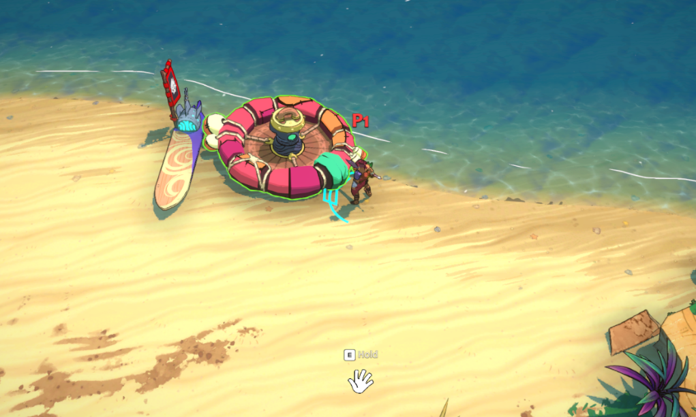
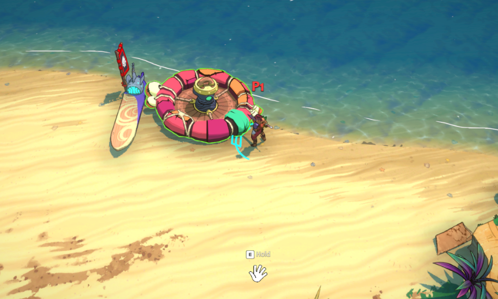
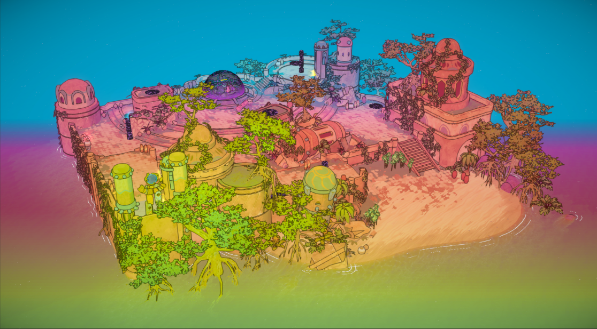
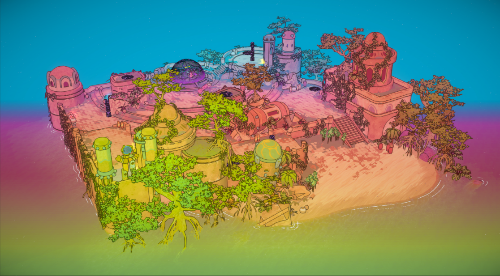
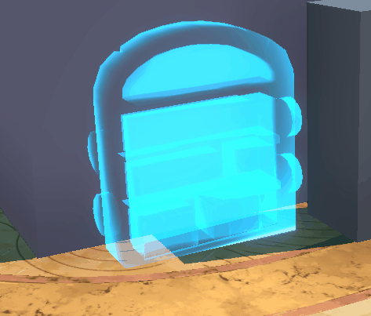
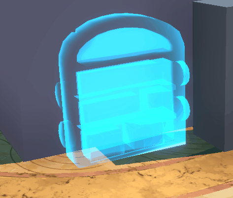

Gabriel Paquette
Graphics Programmer
French Canadian, Montréal QC 🍁
Graphics Programmer
French Canadian, Montréal QC 🍁
Surfpunk is a PvE co-op extraction ARPG by Double Stallion Games, where players are raiders in a world filled with islands to explore and resources to collect. I arrived on the project when 3D was still very new for the team, and my main mandate was to port the studio's style from 2D to 3D while keeping it looking like a Double Stallion game. The game then pivoted from 2D platforming gameplay to a top-down view, and over almost two years I got to tackle many subjects, such as the cel-shading for character and environments, the water, the outlines, tools for the artists and many more!
My first task was to make a shader to replicate the signature look and feel of Double Stallion's previous games. It uses a gradient texture for how the lights affect the shading so it's easy for an object to go from a smoother shading to a cel shading. It supports many features, such as specular highlights, rim lights, additional lights, emissive textures and options for outlines within a single object. Some features depend on if the object is a character or an environment object, including triplanar texturing, texture blending, silhouette shading, vertex displacement for an ink effect on the enemies, and wind.
Later on, I added a Decal shader as a variant of the main cel shader. Using the depth buffer, it recalculates where the position in world space is, which allows for decals. The same code is reused for some visual effects that uses different shaders made specifically for those effects. They are animated by sending the current time and the starting time of the effect to the effect's shader.


Water was one of my main focus during my time on Surfpunk. I implemented many things, such as caustics, refraction, and recoloring based on how deep into the water the objects are. I was allowed a lot of liberty on how it looks!
For the low-amplitude waves in the first video, a big focus was put on making them readable and predictable. All the connected players needed to have the same waves, and the waves needed to be visible but small enough to not move the players too much.
The intersection foam is always an interesting challenge to tackle. A popular way to do this is to use the depth buffer: recolor the objects that are under the water, and make them into foam if they are close to the surface. A problem with this approach is that it can only place foam on top of objects. If you were to look at a building from the side, the foam wouldn't extrude as expected. To fix this, I came up with a few solutions, most important of which was to bake an intersection texture to identify where the objects intersects with the water, and add to that texture the distance from the intersection. The result is exagerated on the gif that shows the paddles of the ship, I got to generate those automatically from the model given by our environment artist.
The tsunami wave happens at the end of the level. At its core, it is a curve that a designer can modify, which is then used in gameplay to tell where the player should be, and that same curve is baked to a texture which is used to displace the vertices of a plane to make the wave. Another model is added on top for the foam, and the general shading of the wave follows the same principles as the water.
When allowed to pick my own task for a sprint, I decided to focus on making a prototype to generate islands for Surfpunk. The idea was to have something that can be expanded upon, so I set out to generate the ground for islands and for this to be usable by designers as a first rough pass. As you can see in the gif, it uses very few tiles and generates very varied shapes. This is thanks to the grid used to place the tiles, which is comprised of triangles and squares, and it deforms the tiles to fit the grid. It is heavily inspired by the work of Oskar Stålberg, except this approach was intended for use as an editor tool instead of full runtime generation.
 

The outlines were one of my first challenges as a graphics programmer on this project, after making the cel shading. In the end, I used many different techniques, but the most important one is showed in the gifs. An ID is calculated for each object, and rendered to a buffer which is then used to make the outlines in a post processing pass. Any difference in this buffer, given some parameters, will generate an outline pixel. I also used the depth and the normals of the objects to make outlines in some situations, but using IDs gave the most consistent results and quickly became the main technique for the outlines in this project.
I made this tool to help artists with painting textures. Of course, it is entirely possible to paint this way in other software, but our level pipeline was in Unity, so painting in the engine was needed in order to have the extra props such as grass or trees during the painting. As for how it works, it detects where to cursor is on the object, and paints a texture based on the texture coordinates that the cursor picked up. It paints in RGBA channels individually and this texture is then given to the ground's shader where the ground textures are blended accordingly.
Using Unity's Animation Rigging Package, I made a solution to calculate where the feet should be at any given time. The enemies in Surfpunk can then choose for themselves if they should take a step or not, my solution decides where the feet are and the package's IK solver places the bones accordingly. In this gif, the animator only needed to animate parts of the model and let the root and the feet still. The feet and the body are then moved by my code, and it uses the distance from the animation poses to determine when to take steps.
Of these, I am most proud of the Sumi oil shader shown in the first three gifs. I got full liberty on how it should look, and came up with this result by using noise to sample noise. We needed something that the player would immidiately identify to the enemies of the game, which are based on oil and ink.
There's also atmospheric effects, which changes colors based on the depth of the camera's view allowing for fog, weather presets that changes the feel of a specific run of the game, tests for code to make clouds and the skybox, blending the grass and environment objects, volumetric lights, and also wind by moving vertices.


 


.gif)
.gif)

 
